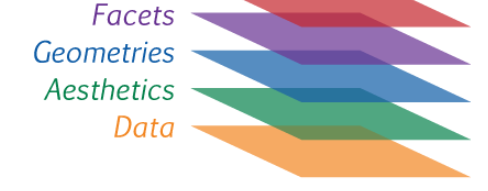

library(tidyverse)5 Visualización
ggplot
Gra
El paquete ggplot2 tiene una flexibilidad tal que permite generar rápidamente gráficos exploratorios así como crear figuras complejas, de alta calidad (con fines de publicaciones científicas, por ej).
Tiene su propia gramática (“Grammar of Graphics”): “suma de capas”

Salvo la primera (que debe ser
ggplot()), las capas no tienen un orden estrictoLas capas se van agregando con un símbolo
+Un mismo gráfico acepta tomar información de distintos datasets
Las capas básicas son:
data (
ggplot()): inicializa un objeto gráfico deggplotaesthetics (
aes()): “Algo que se puede ver” Dentro de la capaaesdebemos indicar que a que variable se atribuyen los diferentes atributos:- mapeo de variables (ejes
xey) - color exterior de los objetos o de las líneas (
col) - color de relleno (
fill) - forma de los puntos (
shape) - tipo de línea (
linetype) - tamaño de los puntos (
size)
- mapeo de variables (ejes
geometrías (
geom_): formas geométricas para representar las observaciones (dan el nombre al tipo de gráfico: gráfico de dispersión, boxplot, histograma, etc…)- geom_point()
- geom_smooth()
- geom_boxplot()
- lista de “geoms”
Otras capas importantes:
facetas (
facet_x()): “paneles de compartimentalización” de un mismo gráfico- facet_wrap(): paneles contiguos
- facets_grid(): paneles tipo grilla
themes combinación de colores
labs nombres detallados de ejes, leyendas, titulos, etc..
Ejemplo de visualización con iris
También necesitaremos:
pacman::p_load(Hmisc, # para cálculos dentro de los mismas capas
patchwork # ensamblar multiples graficos
)5.1 Ambas variables contínuas
iris %>%
ggplot() +
aes(x = Sepal.Length, y = Petal.Length)
# también podán encontrar
# ggplot(iris, aes(x = Sepal.Length, y = Petal.Length))5.1.1 geoms
Objetos geométricos. Son la representación visual de las observaciones. En general los que le dan el nombre al tipo de gráfico. La lista de “geoms” aumenta día a día.
iris %>%
ggplot() +
aes(x = Sepal.Length, y = Petal.Length)+
geom_point()iris %>%
ggplot() +
aes(x = Sepal.Length, y = Petal.Length)+
geom_point(aes(color = Species))iris %>%
ggplot() +
aes(x = Sepal.Length, y = Petal.Length)+
geom_point(aes(color = Species))+
geom_smooth()iris %>%
ggplot() +
aes(x = Sepal.Length, y = Petal.Length)+
geom_point()+
geom_smooth()5.1.2 facets
Las facetas o “facets” permiten dividir el mismo gráfico en múltiples paneles asociados a los niveles de un factor.
iris %>%
ggplot() +
aes(x = Sepal.Length, y = Petal.Length)+
geom_point()+
geom_smooth(method = "lm")+
facet_wrap(~Species)5.1.3 theme
Los temas (theme) son un conjunto de opciones predefinidas sobre la apariencia de los objetos en ggplot. El tema por defecto del ggplot dibuja el gráfico sobre un fondo gris. Podemos cambiarlo a blanco y negro añadiendo el comando theme_bw().
ggplot(iris) +
aes(x = Sepal.Length, y = Petal.Length)+
geom_point()+
geom_smooth(method = "lm")+
facet_wrap(~Species) +
theme_bw()5.1.4 ggsave
ggsave(last_plot(), file="plots/iris_smooth.tiff",
w=80, h=60, units="mm", dpi=300)5.2 Variable continua vs factor
Los gráficos de barra, ampliamente usados en publicaciones científicas, son cada vez más criticados por “ocultar” la naturaleza de las observaciones Drummond and Vowler (2011); Weissgerber (2015)

A continuación presentamos algunas opciones gráficas que surgen de la combinación de medidas de posición y de dispersión.
# Aprovechamos para customizar el `theme` a nuestro gusto y agregar algunos detalles:
p0 <- iris %>%
ggplot() +
aes(x = Species, y = Petal.Length)+
labs(x = "Iris species", y ="Sepal length (cm)") +
theme_light(base_size = 10)
p05.2.1 Observaciones + media / mediana
p1 <- p0 +
geom_point(shape = 1, alpha=0.2)+
stat_summary(fun= mean, #median
geom = "point",
size = 2)+
labs(title="Observaciones (points) & media")
p1p2 <- p0 +
geom_jitter(width = 0.2, alpha=0.2)+
stat_summary(fun = mean, #median
geom = "crossbar",
size = 0.5)+
labs(title="Observaciones (jitter) & media")
p25.2.2 Barplot + SE
p3 <-p0 +
stat_summary(fun=mean, position=position_dodge(width=0.95),geom="bar",
colour="black",fill="grey90")+
stat_summary(fun.data=mean_cl_normal, geom="errorbar", width=0.2) +
labs(title="Barplot & SEM")
p35.2.3 Box-plot
p4 <-p0 +
geom_boxplot(fill = "grey90") +
labs(title="Boxplot & mean")
p45.2.4 Violin plot
p5 <-p0 +
geom_violin(trim=FALSE,fill = "grey90")+
labs(title="Violin plot")
p5 5.2.5 Media & dispersión
p6 <- p0 +
stat_summary(fun="mean", geom="point", size=2)+
stat_summary(fun.data = mean_se, geom = "errorbar", width=0.2)+
stat_summary(fun.data= mean_sdl, geom = "errorbar", color="red", width=0.2)+
stat_summary(fun.data = mean_cl_boot, geom = "errorbar", color="blue", width=0.2)+
labs(title="Media + SE (negro) / SD (rojo) / 95% CI (negro)")
p6Ahora ensamblemos todos los gráficos creados con ayuda de {patchwork}
library(patchwork)
multiplot <- (p1 + p2 + p3) / (p4 + p5 + p6)
Challenge
Guarden el gráfico ensamblado en la carpeta plots, llamado “multiplot.jpg”, de manera tal que sea legible (para eso usen el atributo scale= dentro de la función ggsave , y el base_size = indicado en el grafico base “p0”
ggsave(plot= ,
file= ,
w= ,
h= ,
units="mm",
scale= ,
dpi=300,
)
Xtras
La gran comunidad de usuarios de R disponibiliza sus creaciones e incluso trabaja en extensiones que amplían la potencialidad de sus paquetes.
Se podría afirmar que no hay límites para la creación. Digamos, que no importa el “¿cómo?” si no el “¿qué?”
Algunas pruebas de ello son los siguientes links: